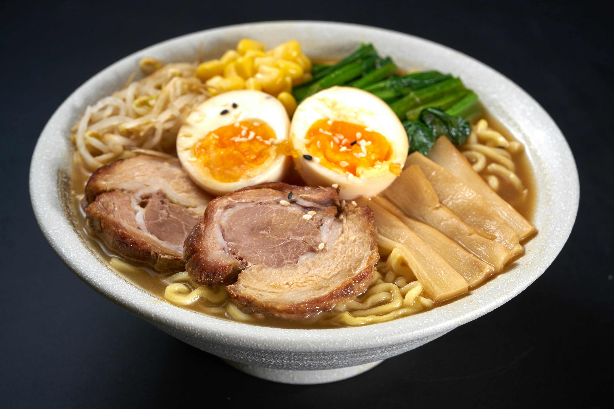

HOME
Ramen

Description
is a Japanese noodle dish. It is a part of Japanese Chinese cuisine. It includes Chinese-style alkaline wheat noodles served in several flavors of hot broth.
Ingredient
- Ramen noodles
- Garlic and ginger
- Broth (chicken or veg)
- Dried shiitake mushrooms
- Veggies like carrots or kale
- Toppings like some panko, egg, chili oil, etc.
Steps
- Stir-Fry The Aromatics: Garlic and ginger, what a delicious duo. This is where the flavor is, friends.
- Make Your (Easy!) Broth: Add some chicken broth and dried shiitake mushrooms for some umami punch.
- Add Noodles: Cook your noodles right in the broth with some scallions.
- Add Veg: Thinly sliced kale, shredded carrots, whatever you’d like! Cook until just tender.
- Top It Off: Add some crunchy panko crumbs, a soft-boiled egg, chili oil, hot sauce, sesame oil, and/or soy sauce.